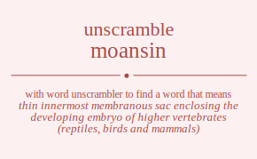

The word found after unscrambling moansin means that thin innermost membranous sac enclosing the developing embryo of higher vertebrates (reptiles, birds and mammals), .

The word found after unscrambling moansin means that thin innermost membranous sac enclosing the developing embryo of higher vertebrates (reptiles, birds and mammals), .
You can also find solutions for different combinations of letters in moansin like moansin moansni moanisn moanins moannsi moannis moasnin moasnni moasinn moasinn moasnni moasnin moainsn moainns moaisnn moaisnn moainns moainsn moannsi moannis moansni moansin moanins moanisn monasin monasni monaisn monains monansi monanis monsain monsani monsian monsina monsnai monsnia moniasn monians monisan monisna moninas moninsa monnasi monnais monnsai monnsia monnias monnisa mosanin mosanni mosainn mosainn mosanni mosanin mosnain mosnani mosnian mosnina mosnnai mosnnia mosiann mosiann mosinan mosinna mosinan mosinna mosnani mosnain mosnnai mosnnia mosnian mosnina moiansn moianns moiasnn moiasnn moianns moiansn moinasn moinans moinsan moinsna moinnas moinnsa moisann moisann moisnan moisnna moisnan moisnna moinans moinasn moinnas moinnsa moinsan moinsna monansi monanis monasni monasin monains monaisn monnasi monnais monnsai monnsia monnias monnisa monsani monsain monsnai monsnia monsian monsina monians moniasn moninas moninsa monisan monisna maonsin maonsni maonisn maonins maonnsi maonnis maosnin maosnni maosinn maosinn maosnni maosnin maoinsn maoinns maoisnn maoisnn maoinns maoinsn maonnsi maonnis maonsni maonsin maonins maonisn manosin manosni manoisn manoins manonsi manonis mansoin mansoni mansion mansino mansnoi mansnio maniosn manions manison manisno maninos maninso mannosi mannois mannsoi mannsio mannios manniso masonin masonni masoinn masoinn masonni masonin masnoin masnoni masnion masnino masnnoi masnnio masionn masionn masinon masinno masinon masinno masnoni masnoin masnnoi masnnio masnion masnino maionsn maionns maiosnn maiosnn maionns maionsn mainosn mainons mainson mainsno mainnos mainnso maisonn maisonn maisnon maisnno maisnon maisnno mainons mainosn mainnos mainnso mainson mainsno manonsi manonis manosni manosin manoins manoisn mannosi mannois mannsoi mannsio mannios manniso mansoni mansoin mansnoi mansnio mansion mansino manions maniosn maninos maninso manison manisno mnoasin mnoasni mnoaisn mnoains mnoansi mnoanis mnosain mnosani mnosian mnosina mnosnai mnosnia mnoiasn mnoians mnoisan mnoisna mnoinas mnoinsa mnonasi mnonais mnonsai mnonsia mnonias mnonisa mnaosin mnaosni mnaoisn mnaoins mnaonsi mnaonis mnasoin mnasoni mnasion mnasino mnasnoi mnasnio mnaiosn mnaions mnaison mnaisno mnainos mnainso mnanosi mnanois mnansoi mnansio mnanios mnaniso mnsoain mnsoani mnsoian mnsoina mnsonai mnsonia mnsaoin mnsaoni mnsaion mnsaino mnsanoi mnsanio mnsioan mnsiona mnsiaon mnsiano mnsinoa mnsinao mnsnoai mnsnoia mnsnaoi mnsnaio mnsnioa mnsniao mnioasn mnioans mniosan mniosna mnionas mnionsa mniaosn mniaons mniason mniasno mnianos mnianso mnisoan mnisona mnisaon mnisano mnisnoa mnisnao mninoas mninosa mninaos mninaso mninsoa mninsao mnnoasi mnnoais mnnosai mnnosia mnnoias mnnoisa mnnaosi mnnaois mnnasoi mnnasio mnnaios mnnaiso mnnsoai mnnsoia mnnsaoi mnnsaio mnnsioa mnnsiao mnnioas mnniosa mnniaos mnniaso mnnisoa mnnisao msoanin msoanni msoainn msoainn msoanni msoanin msonain msonani msonian msonina msonnai msonnia msoiann msoiann msoinan msoinna msoinan msoinna msonani msonain msonnai msonnia msonian msonina msaonin msaonni msaoinn msaoinn msaonni msaonin msanoin msanoni msanion msanino msannoi msannio msaionn msaionn msainon msainno msainon msainno msanoni msanoin msannoi msannio msanion msanino msnoain msnoani msnoian msnoina msnonai msnonia msnaoin msnaoni msnaion msnaino msnanoi msnanio msnioan msniona msniaon msniano msninoa msninao msnnoai msnnoia msnnaoi msnnaio msnnioa msnniao msioann msioann msionan msionna msionan msionna msiaonn msiaonn msianon msianno msianon msianno msinoan msinona msinaon msinano msinnoa msinnao msinoan msinona msinaon msinano msinnoa msinnao msnoani msnoain msnonai msnonia msnoian msnoina msnaoni msnaoin msnanoi msnanio msnaion msnaino msnnoai msnnoia msnnaoi msnnaio msnnioa msnniao msnioan msniona msniaon msniano msninoa msninao mioansn mioanns mioasnn mioasnn mioanns mioansn mionasn mionans mionsan mionsna mionnas mionnsa miosann miosann miosnan miosnna miosnan miosnna mionans mionasn mionnas mionnsa mionsan mionsna miaonsn miaonns miaosnn miaosnn miaonns miaonsn mianosn mianons mianson miansno miannos miannso miasonn miasonn miasnon miasnno miasnon miasnno mianons mianosn miannos miannso mianson miansno minoasn minoans minosan minosna minonas minonsa minaosn minaons minason minasno minanos minanso minsoan minsona minsaon minsano minsnoa minsnao minnoas minnosa minnaos minnaso minnsoa minnsao misoann misoann misonan misonna misonan misonna misaonn misaonn misanon misanno misanon misanno misnoan misnona misnaon misnano misnnoa misnnao misnoan misnona misnaon misnano misnnoa misnnao minoans minoasn minonas minonsa minosan minosna minaons minaosn minanos minanso minason minasno minnoas minnosa minnaos minnaso minnsoa minnsao minsoan minsona minsaon minsano minsnoa minsnao mnoansi mnoanis mnoasni mnoasin mnoains mnoaisn mnonasi mnonais mnonsai mnonsia mnonias mnonisa mnosani mnosain mnosnai mnosnia mnosian mnosina mnoians mnoiasn mnoinas mnoinsa mnoisan mnoisna mnaonsi mnaonis mnaosni mnaosin mnaoins mnaoisn mnanosi mnanois mnansoi mnansio mnanios mnaniso mnasoni mnasoin mnasnoi mnasnio mnasion mnasino mnaions mnaiosn mnainos mnainso mnaison mnaisno mnnoasi mnnoais mnnosai mnnosia mnnoias mnnoisa mnnaosi mnnaois mnnasoi mnnasio mnnaios mnnaiso mnnsoai mnnsoia mnnsaoi mnnsaio mnnsioa mnnsiao mnnioas mnniosa mnniaos mnniaso mnnisoa mnnisao mnsoani mnsoain mnsonai mnsonia mnsoian mnsoina mnsaoni mnsaoin mnsanoi mnsanio mnsaion mnsaino mnsnoai mnsnoia mnsnaoi mnsnaio mnsnioa mnsniao mnsioan mnsiona mnsiaon mnsiano mnsinoa mnsinao mnioans mnioasn mnionas mnionsa mniosan mniosna mniaons mniaosn mnianos mnianso mniason mniasno mninoas mninosa mninaos mninaso mninsoa mninsao mnisoan mnisona mnisaon mnisano mnisnoa mnisnao omansin omansni omanisn omanins omannsi omannis omasnin omasnni omasinn omasinn omasnni omasnin omainsn omainns omaisnn omaisnn omainns omainsn omannsi omannis omansni omansin omanins omanisn omnasin omnasni omnaisn omnains omnansi omnanis omnsain omnsani omnsian omnsina omnsnai omnsnia omniasn omnians omnisan omnisna omninas omninsa omnnasi omnnais omnnsai omnnsia omnnias omnnisa omsanin omsanni omsainn omsainn omsanni omsanin omsnain omsnani omsnian omsnina omsnnai omsnnia omsiann omsiann omsinan omsinna omsinan omsinna omsnani omsnain omsnnai omsnnia omsnian omsnina omiansn omianns omiasnn omiasnn omianns omiansn ominasn ominans ominsan ominsna ominnas ominnsa omisann omisann omisnan omisnna omisnan omisnna ominans ominasn ominnas ominnsa ominsan ominsna omnansi omnanis omnasni omnasin omnains omnaisn omnnasi omnnais omnnsai omnnsia omnnias omnnisa omnsani omnsain omnsnai omnsnia omnsian omnsina omnians omniasn omninas omninsa omnisan omnisna oamnsin oamnsni oamnisn oamnins oamnnsi oamnnis oamsnin oamsnni oamsinn oamsinn oamsnni oamsnin oaminsn oaminns oamisnn oamisnn oaminns oaminsn oamnnsi oamnnis oamnsni oamnsin oamnins oamnisn oanmsin oanmsni oanmisn oanmins oanmnsi oanmnis oansmin oansmni oansimn oansinm oansnmi oansnim oanimsn oanimns oanismn oanisnm oaninms oaninsm oannmsi oannmis oannsmi oannsim oannims oannism oasmnin oasmnni oasminn oasminn oasmnni oasmnin oasnmin oasnmni oasnimn oasninm oasnnmi oasnnim oasimnn oasimnn oasinmn oasinnm oasinmn oasinnm oasnmni oasnmin oasnnmi oasnnim oasnimn oasninm oaimnsn oaimnns oaimsnn oaimsnn oaimnns oaimnsn oainmsn oainmns oainsmn oainsnm oainnms oainnsm oaismnn oaismnn oaisnmn oaisnnm oaisnmn oaisnnm oainmns oainmsn oainnms oainnsm oainsmn oainsnm oanmnsi oanmnis oanmsni oanmsin oanmins oanmisn oannmsi oannmis oannsmi oannsim oannims oannism oansmni oansmin oansnmi oansnim oansimn oansinm oanimns oanimsn oaninms oaninsm oanismn oanisnm onmasin onmasni onmaisn onmains onmansi onmanis onmsain onmsani onmsian onmsina onmsnai onmsnia onmiasn onmians onmisan onmisna onminas onminsa onmnasi onmnais onmnsai onmnsia onmnias onmnisa onamsin onamsni onamisn onamins onamnsi onamnis onasmin onasmni onasimn onasinm onasnmi onasnim onaimsn onaimns onaismn onaisnm onainms onainsm onanmsi onanmis onansmi onansim onanims onanism onsmain onsmani onsmian onsmina onsmnai onsmnia onsamin onsamni onsaimn onsainm onsanmi onsanim onsiman onsimna onsiamn onsianm onsinma onsinam onsnmai onsnmia onsnami onsnaim onsnima onsniam onimasn onimans onimsan onimsna onimnas onimnsa oniamsn oniamns oniasmn oniasnm onianms oniansm onisman onismna onisamn onisanm onisnma onisnam oninmas oninmsa oninams oninasm oninsma oninsam onnmasi onnmais onnmsai onnmsia onnmias onnmisa onnamsi onnamis onnasmi onnasim onnaims onnaism onnsmai onnsmia onnsami onnsaim onnsima onnsiam onnimas onnimsa onniams onniasm onnisma onnisam osmanin osmanni osmainn osmainn osmanni osmanin osmnain osmnani osmnian osmnina osmnnai osmnnia osmiann osmiann osminan osminna osminan osminna osmnani osmnain osmnnai osmnnia osmnian osmnina osamnin osamnni osaminn osaminn osamnni osamnin osanmin osanmni osanimn osaninm osannmi osannim osaimnn osaimnn osainmn osainnm osainmn osainnm osanmni osanmin osannmi osannim osanimn osaninm osnmain osnmani osnmian osnmina osnmnai osnmnia osnamin osnamni osnaimn osnainm osnanmi osnanim osniman osnimna osniamn osnianm osninma osninam osnnmai osnnmia osnnami osnnaim osnnima osnniam osimann osimann osimnan osimnna osimnan osimnna osiamnn osiamnn osianmn osiannm osianmn osiannm osinman osinmna osinamn osinanm osinnma osinnam osinman osinmna osinamn osinanm osinnma osinnam osnmani osnmain osnmnai osnmnia osnmian osnmina osnamni osnamin osnanmi osnanim osnaimn osnainm osnnmai osnnmia osnnami osnnaim osnnima osnniam osniman osnimna osniamn osnianm osninma osninam oimansn oimanns oimasnn oimasnn oimanns oimansn oimnasn oimnans oimnsan oimnsna oimnnas oimnnsa oimsann oimsann oimsnan oimsnna oimsnan oimsnna oimnans oimnasn oimnnas oimnnsa oimnsan oimnsna oiamnsn oiamnns oiamsnn oiamsnn oiamnns oiamnsn oianmsn oianmns oiansmn oiansnm oiannms oiannsm oiasmnn oiasmnn oiasnmn oiasnnm oiasnmn oiasnnm oianmns oianmsn oiannms oiannsm oiansmn oiansnm oinmasn oinmans oinmsan oinmsna oinmnas oinmnsa oinamsn oinamns oinasmn oinasnm oinanms oinansm oinsman oinsmna oinsamn oinsanm oinsnma oinsnam oinnmas oinnmsa oinnams oinnasm oinnsma oinnsam oismann oismann oismnan oismnna oismnan oismnna oisamnn oisamnn oisanmn oisannm oisanmn oisannm oisnman oisnmna oisnamn oisnanm oisnnma oisnnam oisnman oisnmna oisnamn oisnanm oisnnma oisnnam oinmans oinmasn oinmnas oinmnsa oinmsan oinmsna oinamns oinamsn oinanms oinansm oinasmn oinasnm oinnmas oinnmsa oinnams oinnasm oinnsma oinnsam oinsman oinsmna oinsamn oinsanm oinsnma oinsnam onmansi onmanis onmasni onmasin onmains onmaisn onmnasi onmnais onmnsai onmnsia onmnias onmnisa onmsani onmsain onmsnai onmsnia onmsian onmsina onmians onmiasn onminas onminsa onmisan onmisna onamnsi onamnis onamsni onamsin onamins onamisn onanmsi onanmis onansmi onansim onanims onanism onasmni onasmin onasnmi onasnim onasimn onasinm onaimns onaimsn onainms onainsm onaismn onaisnm onnmasi onnmais onnmsai onnmsia onnmias onnmisa onnamsi onnamis onnasmi onnasim onnaims onnaism onnsmai onnsmia onnsami onnsaim onnsima onnsiam onnimas onnimsa onniams onniasm onnisma onnisam onsmani onsmain onsmnai onsmnia onsmian onsmina onsamni onsamin onsanmi onsanim onsaimn onsainm onsnmai onsnmia onsnami onsnaim onsnima onsniam onsiman onsimna onsiamn onsianm onsinma onsinam onimans onimasn onimnas onimnsa onimsan onimsna oniamns oniamsn onianms oniansm oniasmn oniasnm oninmas oninmsa oninams oninasm oninsma oninsam onisman onismna onisamn onisanm onisnma onisnam amonsin amonsni amonisn amonins amonnsi amonnis amosnin amosnni amosinn amosinn amosnni amosnin amoinsn amoinns amoisnn amoisnn amoinns amoinsn amonnsi amonnis amonsni amonsin amonins amonisn amnosin amnosni amnoisn amnoins amnonsi amnonis amnsoin amnsoni amnsion amnsino amnsnoi amnsnio amniosn amnions amnison amnisno amninos amninso amnnosi amnnois amnnsoi amnnsio amnnios amnniso amsonin amsonni amsoinn amsoinn amsonni amsonin amsnoin amsnoni amsnion amsnino amsnnoi amsnnio amsionn amsionn amsinon amsinno amsinon amsinno amsnoni amsnoin amsnnoi amsnnio amsnion amsnino amionsn amionns amiosnn amiosnn amionns amionsn aminosn aminons aminson aminsno aminnos aminnso amisonn amisonn amisnon amisnno amisnon amisnno aminons aminosn aminnos aminnso aminson aminsno amnonsi amnonis amnosni amnosin amnoins amnoisn amnnosi amnnois amnnsoi amnnsio amnnios amnniso amnsoni amnsoin amnsnoi amnsnio amnsion amnsino amnions amniosn amninos amninso amnison amnisno aomnsin aomnsni aomnisn aomnins aomnnsi aomnnis aomsnin aomsnni aomsinn aomsinn aomsnni aomsnin aominsn aominns aomisnn aomisnn aominns aominsn aomnnsi aomnnis aomnsni aomnsin aomnins aomnisn aonmsin aonmsni aonmisn aonmins aonmnsi aonmnis aonsmin aonsmni aonsimn aonsinm aonsnmi aonsnim aonimsn aonimns aonismn aonisnm aoninms aoninsm aonnmsi aonnmis aonnsmi aonnsim aonnims aonnism aosmnin aosmnni aosminn aosminn aosmnni aosmnin aosnmin aosnmni aosnimn aosninm aosnnmi aosnnim aosimnn aosimnn aosinmn aosinnm aosinmn aosinnm aosnmni aosnmin aosnnmi aosnnim aosnimn aosninm aoimnsn aoimnns aoimsnn aoimsnn aoimnns aoimnsn aoinmsn aoinmns aoinsmn aoinsnm aoinnms aoinnsm aoismnn aoismnn aoisnmn aoisnnm aoisnmn aoisnnm aoinmns aoinmsn aoinnms aoinnsm aoinsmn aoinsnm aonmnsi aonmnis aonmsni aonmsin aonmins aonmisn aonnmsi aonnmis aonnsmi aonnsim aonnims aonnism aonsmni aonsmin aonsnmi aonsnim aonsimn aonsinm aonimns aonimsn aoninms aoninsm aonismn aonisnm anmosin anmosni anmoisn anmoins anmonsi anmonis anmsoin anmsoni anmsion anmsino anmsnoi anmsnio anmiosn anmions anmison anmisno anminos anminso anmnosi anmnois anmnsoi anmnsio anmnios anmniso anomsin anomsni anomisn anomins anomnsi anomnis anosmin anosmni anosimn anosinm anosnmi anosnim anoimsn anoimns anoismn anoisnm anoinms anoinsm anonmsi anonmis anonsmi anonsim anonims anonism ansmoin ansmoni ansmion ansmino ansmnoi ansmnio ansomin ansomni ansoimn ansoinm ansonmi ansonim ansimon ansimno ansiomn ansionm ansinmo ansinom ansnmoi ansnmio ansnomi ansnoim ansnimo ansniom animosn animons animson animsno animnos animnso aniomsn aniomns aniosmn aniosnm anionms anionsm anismon anismno anisomn anisonm anisnmo anisnom aninmos aninmso aninoms aninosm aninsmo aninsom annmosi annmois annmsoi annmsio annmios annmiso annomsi annomis annosmi annosim annoims annoism annsmoi annsmio annsomi annsoim annsimo annsiom annimos annimso annioms anniosm annismo annisom asmonin asmonni asmoinn asmoinn asmonni asmonin asmnoin asmnoni asmnion asmnino asmnnoi asmnnio asmionn asmionn asminon asminno asminon asminno asmnoni asmnoin asmnnoi asmnnio asmnion asmnino asomnin asomnni asominn asominn asomnni asomnin asonmin asonmni asonimn asoninm asonnmi asonnim asoimnn asoimnn asoinmn asoinnm asoinmn asoinnm asonmni asonmin asonnmi asonnim asonimn asoninm asnmoin asnmoni asnmion asnmino asnmnoi asnmnio asnomin asnomni asnoimn asnoinm asnonmi asnonim asnimon asnimno asniomn asnionm asninmo asninom asnnmoi asnnmio asnnomi asnnoim asnnimo asnniom asimonn asimonn asimnon asimnno asimnon asimnno asiomnn asiomnn asionmn asionnm asionmn asionnm asinmon asinmno asinomn asinonm asinnmo asinnom asinmon asinmno asinomn asinonm asinnmo asinnom asnmoni asnmoin asnmnoi asnmnio asnmion asnmino asnomni asnomin asnonmi asnonim asnoimn asnoinm asnnmoi asnnmio asnnomi asnnoim asnnimo asnniom asnimon asnimno asniomn asnionm asninmo asninom aimonsn aimonns aimosnn aimosnn aimonns aimonsn aimnosn aimnons aimnson aimnsno aimnnos aimnnso aimsonn aimsonn aimsnon aimsnno aimsnon aimsnno aimnons aimnosn aimnnos aimnnso aimnson aimnsno aiomnsn aiomnns aiomsnn aiomsnn aiomnns aiomnsn aionmsn aionmns aionsmn aionsnm aionnms aionnsm aiosmnn aiosmnn aiosnmn aiosnnm aiosnmn aiosnnm aionmns aionmsn aionnms aionnsm aionsmn aionsnm ainmosn ainmons ainmson ainmsno ainmnos ainmnso ainomsn ainomns ainosmn ainosnm ainonms ainonsm ainsmon ainsmno ainsomn ainsonm ainsnmo ainsnom ainnmos ainnmso ainnoms ainnosm ainnsmo ainnsom aismonn aismonn aismnon aismnno aismnon aismnno aisomnn aisomnn aisonmn aisonnm aisonmn aisonnm aisnmon aisnmno aisnomn aisnonm aisnnmo aisnnom aisnmon aisnmno aisnomn aisnonm aisnnmo aisnnom ainmons ainmosn ainmnos ainmnso ainmson ainmsno ainomns ainomsn ainonms ainonsm ainosmn ainosnm ainnmos ainnmso ainnoms ainnosm ainnsmo ainnsom ainsmon ainsmno ainsomn ainsonm ainsnmo ainsnom anmonsi anmonis anmosni anmosin anmoins anmoisn anmnosi anmnois anmnsoi anmnsio anmnios anmniso anmsoni anmsoin anmsnoi anmsnio anmsion anmsino anmions anmiosn anminos anminso anmison anmisno anomnsi anomnis anomsni anomsin anomins anomisn anonmsi anonmis anonsmi anonsim anonims anonism anosmni anosmin anosnmi anosnim anosimn anosinm anoimns anoimsn anoinms anoinsm anoismn anoisnm annmosi annmois annmsoi annmsio annmios annmiso annomsi annomis annosmi annosim annoims annoism annsmoi annsmio annsomi annsoim annsimo annsiom annimos annimso annioms anniosm annismo annisom ansmoni ansmoin ansmnoi ansmnio ansmion ansmino ansomni ansomin ansonmi ansonim ansoimn ansoinm ansnmoi ansnmio ansnomi ansnoim ansnimo ansniom ansimon ansimno ansiomn ansionm ansinmo ansinom animons animosn animnos animnso animson animsno aniomns aniomsn anionms anionsm aniosmn aniosnm aninmos aninmso aninoms aninosm aninsmo aninsom anismon anismno anisomn anisonm anisnmo anisnom nmoasin nmoasni nmoaisn nmoains nmoansi nmoanis nmosain nmosani nmosian nmosina nmosnai nmosnia nmoiasn nmoians nmoisan nmoisna nmoinas nmoinsa nmonasi nmonais nmonsai nmonsia nmonias nmonisa nmaosin nmaosni nmaoisn nmaoins nmaonsi nmaonis nmasoin nmasoni nmasion nmasino nmasnoi nmasnio nmaiosn nmaions nmaison nmaisno nmainos nmainso nmanosi nmanois nmansoi nmansio nmanios nmaniso nmsoain nmsoani nmsoian nmsoina nmsonai nmsonia nmsaoin nmsaoni nmsaion nmsaino nmsanoi nmsanio nmsioan nmsiona nmsiaon nmsiano nmsinoa nmsinao nmsnoai nmsnoia nmsnaoi nmsnaio nmsnioa nmsniao nmioasn nmioans nmiosan nmiosna nmionas nmionsa nmiaosn nmiaons nmiason nmiasno nmianos nmianso nmisoan nmisona nmisaon nmisano nmisnoa nmisnao nminoas nminosa nminaos nminaso nminsoa nminsao nmnoasi nmnoais nmnosai nmnosia nmnoias nmnoisa nmnaosi nmnaois nmnasoi nmnasio nmnaios nmnaiso nmnsoai nmnsoia nmnsaoi nmnsaio nmnsioa nmnsiao nmnioas nmniosa nmniaos nmniaso nmnisoa nmnisao nomasin nomasni nomaisn nomains nomansi nomanis nomsain nomsani nomsian nomsina nomsnai nomsnia nomiasn nomians nomisan nomisna nominas nominsa nomnasi nomnais nomnsai nomnsia nomnias nomnisa noamsin noamsni noamisn noamins noamnsi noamnis noasmin noasmni noasimn noasinm noasnmi noasnim noaimsn noaimns noaismn noaisnm noainms noainsm noanmsi noanmis noansmi noansim noanims noanism nosmain nosmani nosmian nosmina nosmnai nosmnia nosamin nosamni nosaimn nosainm nosanmi nosanim nosiman nosimna nosiamn nosianm nosinma nosinam nosnmai nosnmia nosnami nosnaim nosnima nosniam noimasn noimans noimsan noimsna noimnas noimnsa noiamsn noiamns noiasmn noiasnm noianms noiansm noisman noismna noisamn noisanm noisnma noisnam noinmas noinmsa noinams noinasm noinsma noinsam nonmasi nonmais nonmsai nonmsia nonmias nonmisa nonamsi nonamis nonasmi nonasim nonaims nonaism nonsmai nonsmia nonsami nonsaim nonsima nonsiam nonimas nonimsa noniams noniasm nonisma nonisam namosin namosni namoisn namoins namonsi namonis namsoin namsoni namsion namsino namsnoi namsnio namiosn namions namison namisno naminos naminso namnosi namnois namnsoi namnsio namnios namniso naomsin naomsni naomisn naomins naomnsi naomnis naosmin naosmni naosimn naosinm naosnmi naosnim naoimsn naoimns naoismn naoisnm naoinms naoinsm naonmsi naonmis naonsmi naonsim naonims naonism nasmoin nasmoni nasmion nasmino nasmnoi nasmnio nasomin nasomni nasoimn nasoinm nasonmi nasonim nasimon nasimno nasiomn nasionm nasinmo nasinom nasnmoi nasnmio nasnomi nasnoim nasnimo nasniom naimosn naimons naimson naimsno naimnos naimnso naiomsn naiomns naiosmn naiosnm naionms naionsm naismon naismno naisomn naisonm naisnmo naisnom nainmos nainmso nainoms nainosm nainsmo nainsom nanmosi nanmois nanmsoi nanmsio nanmios nanmiso nanomsi nanomis nanosmi nanosim nanoims nanoism nansmoi nansmio nansomi nansoim nansimo nansiom nanimos nanimso nanioms naniosm nanismo nanisom nsmoain nsmoani nsmoian nsmoina nsmonai nsmonia nsmaoin nsmaoni nsmaion nsmaino nsmanoi nsmanio nsmioan nsmiona nsmiaon nsmiano nsminoa nsminao nsmnoai nsmnoia nsmnaoi nsmnaio nsmnioa nsmniao nsomain nsomani nsomian nsomina nsomnai nsomnia nsoamin nsoamni nsoaimn nsoainm nsoanmi nsoanim nsoiman nsoimna nsoiamn nsoianm nsoinma nsoinam nsonmai nsonmia nsonami nsonaim nsonima nsoniam nsamoin nsamoni nsamion nsamino nsamnoi nsamnio nsaomin nsaomni nsaoimn nsaoinm nsaonmi nsaonim nsaimon nsaimno nsaiomn nsaionm nsainmo nsainom nsanmoi nsanmio nsanomi nsanoim nsanimo nsaniom nsimoan nsimona nsimaon nsimano nsimnoa nsimnao nsioman nsiomna nsioamn nsioanm nsionma nsionam nsiamon nsiamno nsiaomn nsiaonm nsianmo nsianom nsinmoa nsinmao nsinoma nsinoam nsinamo nsinaom nsnmoai nsnmoia nsnmaoi nsnmaio nsnmioa nsnmiao nsnomai nsnomia nsnoami nsnoaim nsnoima nsnoiam nsnamoi nsnamio nsnaomi nsnaoim nsnaimo nsnaiom nsnimoa nsnimao nsnioma nsnioam nsniamo nsniaom nimoasn nimoans nimosan nimosna nimonas nimonsa nimaosn nimaons nimason nimasno nimanos nimanso nimsoan nimsona nimsaon nimsano nimsnoa nimsnao nimnoas nimnosa nimnaos nimnaso nimnsoa nimnsao niomasn niomans niomsan niomsna niomnas niomnsa nioamsn nioamns nioasmn nioasnm nioanms nioansm niosman niosmna niosamn niosanm niosnma niosnam nionmas nionmsa nionams nionasm nionsma nionsam niamosn niamons niamson niamsno niamnos niamnso niaomsn niaomns niaosmn niaosnm niaonms niaonsm niasmon niasmno niasomn niasonm niasnmo niasnom nianmos nianmso nianoms nianosm niansmo niansom nismoan nismona nismaon nismano nismnoa nismnao nisoman nisomna nisoamn nisoanm nisonma nisonam nisamon nisamno nisaomn nisaonm nisanmo nisanom nisnmoa nisnmao nisnoma nisnoam nisnamo nisnaom ninmoas ninmosa ninmaos ninmaso ninmsoa ninmsao ninomas ninomsa ninoams ninoasm ninosma ninosam ninamos ninamso ninaoms ninaosm ninasmo ninasom ninsmoa ninsmao ninsoma ninsoam ninsamo ninsaom nnmoasi nnmoais nnmosai nnmosia nnmoias nnmoisa nnmaosi nnmaois nnmasoi nnmasio nnmaios nnmaiso nnmsoai nnmsoia nnmsaoi nnmsaio nnmsioa nnmsiao nnmioas nnmiosa nnmiaos nnmiaso nnmisoa nnmisao nnomasi nnomais nnomsai nnomsia nnomias nnomisa nnoamsi nnoamis nnoasmi nnoasim nnoaims nnoaism nnosmai nnosmia nnosami nnosaim nnosima nnosiam nnoimas nnoimsa nnoiams nnoiasm nnoisma nnoisam nnamosi nnamois nnamsoi nnamsio nnamios nnamiso nnaomsi nnaomis nnaosmi nnaosim nnaoims nnaoism nnasmoi nnasmio nnasomi nnasoim nnasimo nnasiom nnaimos nnaimso nnaioms nnaiosm nnaismo nnaisom nnsmoai nnsmoia nnsmaoi nnsmaio nnsmioa nnsmiao nnsomai nnsomia nnsoami nnsoaim nnsoima nnsoiam nnsamoi nnsamio nnsaomi nnsaoim nnsaimo nnsaiom nnsimoa nnsimao nnsioma nnsioam nnsiamo nnsiaom nnimoas nnimosa nnimaos nnimaso nnimsoa nnimsao nniomas nniomsa nnioams nnioasm nniosma nniosam nniamos nniamso nniaoms nniaosm nniasmo nniasom nnismoa nnismao nnisoma nnisoam nnisamo nnisaom smoanin smoanni smoainn smoainn smoanni smoanin smonain smonani smonian smonina smonnai smonnia smoiann smoiann smoinan smoinna smoinan smoinna smonani smonain smonnai smonnia smonian smonina smaonin smaonni smaoinn smaoinn smaonni smaonin smanoin smanoni smanion smanino smannoi smannio smaionn smaionn smainon smainno smainon smainno smanoni smanoin smannoi smannio smanion smanino smnoain smnoani smnoian smnoina smnonai smnonia smnaoin smnaoni smnaion smnaino smnanoi smnanio smnioan smniona smniaon smniano smninoa smninao smnnoai smnnoia smnnaoi smnnaio smnnioa smnniao smioann smioann smionan smionna smionan smionna smiaonn smiaonn smianon smianno smianon smianno sminoan sminona sminaon sminano sminnoa sminnao sminoan sminona sminaon sminano sminnoa sminnao smnoani smnoain smnonai smnonia smnoian smnoina smnaoni smnaoin smnanoi smnanio smnaion smnaino smnnoai smnnoia smnnaoi smnnaio smnnioa smnniao smnioan smniona smniaon smniano smninoa smninao somanin somanni somainn somainn somanni somanin somnain somnani somnian somnina somnnai somnnia somiann somiann sominan sominna sominan sominna somnani somnain somnnai somnnia somnian somnina soamnin soamnni soaminn soaminn soamnni soamnin soanmin soanmni soanimn soaninm soannmi soannim soaimnn soaimnn soainmn soainnm soainmn soainnm soanmni soanmin soannmi soannim soanimn soaninm sonmain sonmani sonmian sonmina sonmnai sonmnia sonamin sonamni sonaimn sonainm sonanmi sonanim soniman sonimna soniamn sonianm soninma soninam sonnmai sonnmia sonnami sonnaim sonnima sonniam soimann soimann soimnan soimnna soimnan soimnna soiamnn soiamnn soianmn soiannm soianmn soiannm soinman soinmna soinamn soinanm soinnma soinnam soinman soinmna soinamn soinanm soinnma soinnam sonmani sonmain sonmnai sonmnia sonmian sonmina sonamni sonamin sonanmi sonanim sonaimn sonainm sonnmai sonnmia sonnami sonnaim sonnima sonniam soniman sonimna soniamn sonianm soninma soninam samonin samonni samoinn samoinn samonni samonin samnoin samnoni samnion samnino samnnoi samnnio samionn samionn saminon saminno saminon saminno samnoni samnoin samnnoi samnnio samnion samnino saomnin saomnni saominn saominn saomnni saomnin saonmin saonmni saonimn saoninm saonnmi saonnim saoimnn saoimnn saoinmn saoinnm saoinmn saoinnm saonmni saonmin saonnmi saonnim saonimn saoninm sanmoin sanmoni sanmion sanmino sanmnoi sanmnio sanomin sanomni sanoimn sanoinm sanonmi sanonim sanimon sanimno saniomn sanionm saninmo saninom sannmoi sannmio sannomi sannoim sannimo sanniom saimonn saimonn saimnon saimnno saimnon saimnno saiomnn saiomnn saionmn saionnm saionmn saionnm sainmon sainmno sainomn sainonm sainnmo sainnom sainmon sainmno sainomn sainonm sainnmo sainnom sanmoni sanmoin sanmnoi sanmnio sanmion sanmino sanomni sanomin sanonmi sanonim sanoimn sanoinm sannmoi sannmio sannomi sannoim sannimo sanniom sanimon sanimno saniomn sanionm saninmo saninom snmoain snmoani snmoian snmoina snmonai snmonia snmaoin snmaoni snmaion snmaino snmanoi snmanio snmioan snmiona snmiaon snmiano snminoa snminao snmnoai snmnoia snmnaoi snmnaio snmnioa snmniao snomain snomani snomian snomina snomnai snomnia snoamin snoamni snoaimn snoainm snoanmi snoanim snoiman snoimna snoiamn snoianm snoinma snoinam snonmai snonmia snonami snonaim snonima snoniam snamoin snamoni snamion snamino snamnoi snamnio snaomin snaomni snaoimn snaoinm snaonmi snaonim snaimon snaimno snaiomn snaionm snainmo snainom snanmoi snanmio snanomi snanoim snanimo snaniom snimoan snimona snimaon snimano snimnoa snimnao snioman sniomna snioamn snioanm snionma snionam sniamon sniamno sniaomn sniaonm snianmo snianom sninmoa sninmao sninoma sninoam sninamo sninaom snnmoai snnmoia snnmaoi snnmaio snnmioa snnmiao snnomai snnomia snnoami snnoaim snnoima snnoiam snnamoi snnamio snnaomi snnaoim snnaimo snnaiom snnimoa snnimao snnioma snnioam snniamo snniaom simoann simoann simonan simonna simonan simonna simaonn simaonn simanon simanno simanon simanno simnoan simnona simnaon simnano simnnoa simnnao simnoan simnona simnaon simnano simnnoa simnnao siomann siomann siomnan siomnna siomnan siomnna sioamnn sioamnn sioanmn sioannm sioanmn sioannm sionman sionmna sionamn sionanm sionnma sionnam sionman sionmna sionamn sionanm sionnma sionnam siamonn siamonn siamnon siamnno siamnon siamnno siaomnn siaomnn siaonmn siaonnm siaonmn siaonnm sianmon sianmno sianomn sianonm siannmo siannom sianmon sianmno sianomn sianonm siannmo siannom sinmoan sinmona sinmaon sinmano sinmnoa sinmnao sinoman sinomna sinoamn sinoanm sinonma sinonam sinamon sinamno sinaomn sinaonm sinanmo sinanom sinnmoa sinnmao sinnoma sinnoam sinnamo sinnaom sinmoan sinmona sinmaon sinmano sinmnoa sinmnao sinoman sinomna sinoamn sinoanm sinonma sinonam sinamon sinamno sinaomn sinaonm sinanmo sinanom sinnmoa sinnmao sinnoma sinnoam sinnamo sinnaom snmoani snmoain snmonai snmonia snmoian snmoina snmaoni snmaoin snmanoi snmanio snmaion snmaino snmnoai snmnoia snmnaoi snmnaio snmnioa snmniao snmioan snmiona snmiaon snmiano snminoa snminao snomani snomain snomnai snomnia snomian snomina snoamni snoamin snoanmi snoanim snoaimn snoainm snonmai snonmia snonami snonaim snonima snoniam snoiman snoimna snoiamn snoianm snoinma snoinam snamoni snamoin snamnoi snamnio snamion snamino snaomni snaomin snaonmi snaonim snaoimn snaoinm snanmoi snanmio snanomi snanoim snanimo snaniom snaimon snaimno snaiomn snaionm snainmo snainom snnmoai snnmoia snnmaoi snnmaio snnmioa snnmiao snnomai snnomia snnoami snnoaim snnoima snnoiam snnamoi snnamio snnaomi snnaoim snnaimo snnaiom snnimoa snnimao snnioma snnioam snniamo snniaom snimoan snimona snimaon snimano snimnoa snimnao snioman sniomna snioamn snioanm snionma snionam sniamon sniamno sniaomn sniaonm snianmo snianom sninmoa sninmao sninoma sninoam sninamo sninaom imoansn imoanns imoasnn imoasnn imoanns imoansn imonasn imonans imonsan imonsna imonnas imonnsa imosann imosann imosnan imosnna imosnan imosnna imonans imonasn imonnas imonnsa imonsan imonsna imaonsn imaonns imaosnn imaosnn imaonns imaonsn imanosn imanons imanson imansno imannos imannso imasonn imasonn imasnon imasnno imasnon imasnno imanons imanosn imannos imannso imanson imansno imnoasn imnoans imnosan imnosna imnonas imnonsa imnaosn imnaons imnason imnasno imnanos imnanso imnsoan imnsona imnsaon imnsano imnsnoa imnsnao imnnoas imnnosa imnnaos imnnaso imnnsoa imnnsao imsoann imsoann imsonan imsonna imsonan imsonna imsaonn imsaonn imsanon imsanno imsanon imsanno imsnoan imsnona imsnaon imsnano imsnnoa imsnnao imsnoan imsnona imsnaon imsnano imsnnoa imsnnao imnoans imnoasn imnonas imnonsa imnosan imnosna imnaons imnaosn imnanos imnanso imnason imnasno imnnoas imnnosa imnnaos imnnaso imnnsoa imnnsao imnsoan imnsona imnsaon imnsano imnsnoa imnsnao iomansn iomanns iomasnn iomasnn iomanns iomansn iomnasn iomnans iomnsan iomnsna iomnnas iomnnsa iomsann iomsann iomsnan iomsnna iomsnan iomsnna iomnans iomnasn iomnnas iomnnsa iomnsan iomnsna ioamnsn ioamnns ioamsnn ioamsnn ioamnns ioamnsn ioanmsn ioanmns ioansmn ioansnm ioannms ioannsm ioasmnn ioasmnn ioasnmn ioasnnm ioasnmn ioasnnm ioanmns ioanmsn ioannms ioannsm ioansmn ioansnm ionmasn ionmans ionmsan ionmsna ionmnas ionmnsa ionamsn ionamns ionasmn ionasnm ionanms ionansm ionsman ionsmna ionsamn ionsanm ionsnma ionsnam ionnmas ionnmsa ionnams ionnasm ionnsma ionnsam iosmann iosmann iosmnan iosmnna iosmnan iosmnna iosamnn iosamnn iosanmn iosannm iosanmn iosannm iosnman iosnmna iosnamn iosnanm iosnnma iosnnam iosnman iosnmna iosnamn iosnanm iosnnma iosnnam ionmans ionmasn ionmnas ionmnsa ionmsan ionmsna ionamns ionamsn ionanms ionansm ionasmn ionasnm ionnmas ionnmsa ionnams ionnasm ionnsma ionnsam ionsman ionsmna ionsamn ionsanm ionsnma ionsnam iamonsn iamonns iamosnn iamosnn iamonns iamonsn iamnosn iamnons iamnson iamnsno iamnnos iamnnso iamsonn iamsonn iamsnon iamsnno iamsnon iamsnno iamnons iamnosn iamnnos iamnnso iamnson iamnsno iaomnsn iaomnns iaomsnn iaomsnn iaomnns iaomnsn iaonmsn iaonmns iaonsmn iaonsnm iaonnms iaonnsm iaosmnn iaosmnn iaosnmn iaosnnm iaosnmn iaosnnm iaonmns iaonmsn iaonnms iaonnsm iaonsmn iaonsnm ianmosn ianmons ianmson ianmsno ianmnos ianmnso ianomsn ianomns ianosmn ianosnm ianonms ianonsm iansmon iansmno iansomn iansonm iansnmo iansnom iannmos iannmso iannoms iannosm iannsmo iannsom iasmonn iasmonn iasmnon iasmnno iasmnon iasmnno iasomnn iasomnn iasonmn iasonnm iasonmn iasonnm iasnmon iasnmno iasnomn iasnonm iasnnmo iasnnom iasnmon iasnmno iasnomn iasnonm iasnnmo iasnnom ianmons ianmosn ianmnos ianmnso ianmson ianmsno ianomns ianomsn ianonms ianonsm ianosmn ianosnm iannmos iannmso iannoms iannosm iannsmo iannsom iansmon iansmno iansomn iansonm iansnmo iansnom inmoasn inmoans inmosan inmosna inmonas inmonsa inmaosn inmaons inmason inmasno inmanos inmanso inmsoan inmsona inmsaon inmsano inmsnoa inmsnao inmnoas inmnosa inmnaos inmnaso inmnsoa inmnsao inomasn inomans inomsan inomsna inomnas inomnsa inoamsn inoamns inoasmn inoasnm inoanms inoansm inosman inosmna inosamn inosanm inosnma inosnam inonmas inonmsa inonams inonasm inonsma inonsam inamosn inamons inamson inamsno inamnos inamnso inaomsn inaomns inaosmn inaosnm inaonms inaonsm inasmon inasmno inasomn inasonm inasnmo inasnom inanmos inanmso inanoms inanosm inansmo inansom insmoan insmona insmaon insmano insmnoa insmnao insoman insomna insoamn insoanm insonma insonam insamon insamno insaomn insaonm insanmo insanom insnmoa insnmao insnoma insnoam insnamo insnaom innmoas innmosa innmaos innmaso innmsoa innmsao innomas innomsa innoams innoasm innosma innosam innamos innamso innaoms innaosm innasmo innasom innsmoa innsmao innsoma innsoam innsamo innsaom ismoann ismoann ismonan ismonna ismonan ismonna ismaonn ismaonn ismanon ismanno ismanon ismanno ismnoan ismnona ismnaon ismnano ismnnoa ismnnao ismnoan ismnona ismnaon ismnano ismnnoa ismnnao isomann isomann isomnan isomnna isomnan isomnna isoamnn isoamnn isoanmn isoannm isoanmn isoannm isonman isonmna isonamn isonanm isonnma isonnam isonman isonmna isonamn isonanm isonnma isonnam isamonn isamonn isamnon isamnno isamnon isamnno isaomnn isaomnn isaonmn isaonnm isaonmn isaonnm isanmon isanmno isanomn isanonm isannmo isannom isanmon isanmno isanomn isanonm isannmo isannom isnmoan isnmona isnmaon isnmano isnmnoa isnmnao isnoman isnomna isnoamn isnoanm isnonma isnonam isnamon isnamno isnaomn isnaonm isnanmo isnanom isnnmoa isnnmao isnnoma isnnoam isnnamo isnnaom isnmoan isnmona isnmaon isnmano isnmnoa isnmnao isnoman isnomna isnoamn isnoanm isnonma isnonam isnamon isnamno isnaomn isnaonm isnanmo isnanom isnnmoa isnnmao isnnoma isnnoam isnnamo isnnaom inmoans inmoasn inmonas inmonsa inmosan inmosna inmaons inmaosn inmanos inmanso inmason inmasno inmnoas inmnosa inmnaos inmnaso inmnsoa inmnsao inmsoan inmsona inmsaon inmsano inmsnoa inmsnao inomans inomasn inomnas inomnsa inomsan inomsna inoamns inoamsn inoanms inoansm inoasmn inoasnm inonmas inonmsa inonams inonasm inonsma inonsam inosman inosmna inosamn inosanm inosnma inosnam inamons inamosn inamnos inamnso inamson inamsno inaomns inaomsn inaonms inaonsm inaosmn inaosnm inanmos inanmso inanoms inanosm inansmo inansom inasmon inasmno inasomn inasonm inasnmo inasnom innmoas innmosa innmaos innmaso innmsoa innmsao innomas innomsa innoams innoasm innosma innosam innamos innamso innaoms innaosm innasmo innasom innsmoa innsmao innsoma innsoam innsamo innsaom insmoan insmona insmaon insmano insmnoa insmnao insoman insomna insoamn insoanm insonma insonam insamon insamno insaomn insaonm insanmo insanom insnmoa insnmao insnoma insnoam insnamo insnaom nmoansi nmoanis nmoasni nmoasin nmoains nmoaisn nmonasi nmonais nmonsai nmonsia nmonias nmonisa nmosani nmosain nmosnai nmosnia nmosian nmosina nmoians nmoiasn nmoinas nmoinsa nmoisan nmoisna nmaonsi nmaonis nmaosni nmaosin nmaoins nmaoisn nmanosi nmanois nmansoi nmansio nmanios nmaniso nmasoni nmasoin nmasnoi nmasnio nmasion nmasino nmaions nmaiosn nmainos nmainso nmaison nmaisno nmnoasi nmnoais nmnosai nmnosia nmnoias nmnoisa nmnaosi nmnaois nmnasoi nmnasio nmnaios nmnaiso nmnsoai nmnsoia nmnsaoi nmnsaio nmnsioa nmnsiao nmnioas nmniosa nmniaos nmniaso nmnisoa nmnisao nmsoani nmsoain nmsonai nmsonia nmsoian nmsoina nmsaoni nmsaoin nmsanoi nmsanio nmsaion nmsaino nmsnoai nmsnoia nmsnaoi nmsnaio nmsnioa nmsniao nmsioan nmsiona nmsiaon nmsiano nmsinoa nmsinao nmioans nmioasn nmionas nmionsa nmiosan nmiosna nmiaons nmiaosn nmianos nmianso nmiason nmiasno nminoas nminosa nminaos nminaso nminsoa nminsao nmisoan nmisona nmisaon nmisano nmisnoa nmisnao nomansi nomanis nomasni nomasin nomains nomaisn nomnasi nomnais nomnsai nomnsia nomnias nomnisa nomsani nomsain nomsnai nomsnia nomsian nomsina nomians nomiasn nominas nominsa nomisan nomisna noamnsi noamnis noamsni noamsin noamins noamisn noanmsi noanmis noansmi noansim noanims noanism noasmni noasmin noasnmi noasnim noasimn noasinm noaimns noaimsn noainms noainsm noaismn noaisnm nonmasi nonmais nonmsai nonmsia nonmias nonmisa nonamsi nonamis nonasmi nonasim nonaims nonaism nonsmai nonsmia nonsami nonsaim nonsima nonsiam nonimas nonimsa noniams noniasm nonisma nonisam nosmani nosmain nosmnai nosmnia nosmian nosmina nosamni nosamin nosanmi nosanim nosaimn nosainm nosnmai nosnmia nosnami nosnaim nosnima nosniam nosiman nosimna nosiamn nosianm nosinma nosinam noimans noimasn noimnas noimnsa noimsan noimsna noiamns noiamsn noianms noiansm noiasmn noiasnm noinmas noinmsa noinams noinasm noinsma noinsam noisman noismna noisamn noisanm noisnma noisnam namonsi namonis namosni namosin namoins namoisn namnosi namnois namnsoi namnsio namnios namniso namsoni namsoin namsnoi namsnio namsion namsino namions namiosn naminos naminso namison namisno naomnsi naomnis naomsni naomsin naomins naomisn naonmsi naonmis naonsmi naonsim naonims naonism naosmni naosmin naosnmi naosnim naosimn naosinm naoimns naoimsn naoinms naoinsm naoismn naoisnm nanmosi nanmois nanmsoi nanmsio nanmios nanmiso nanomsi nanomis nanosmi nanosim nanoims nanoism nansmoi nansmio nansomi nansoim nansimo nansiom nanimos nanimso nanioms naniosm nanismo nanisom nasmoni nasmoin nasmnoi nasmnio nasmion nasmino nasomni nasomin nasonmi nasonim nasoimn nasoinm nasnmoi nasnmio nasnomi nasnoim nasnimo nasniom nasimon nasimno nasiomn nasionm nasinmo nasinom naimons naimosn naimnos naimnso naimson naimsno naiomns naiomsn naionms naionsm naiosmn naiosnm nainmos nainmso nainoms nainosm nainsmo nainsom naismon naismno naisomn naisonm naisnmo naisnom nnmoasi nnmoais nnmosai nnmosia nnmoias nnmoisa nnmaosi nnmaois nnmasoi nnmasio nnmaios nnmaiso nnmsoai nnmsoia nnmsaoi nnmsaio nnmsioa nnmsiao nnmioas nnmiosa nnmiaos nnmiaso nnmisoa nnmisao nnomasi nnomais nnomsai nnomsia nnomias nnomisa nnoamsi nnoamis nnoasmi nnoasim nnoaims nnoaism nnosmai nnosmia nnosami nnosaim nnosima nnosiam nnoimas nnoimsa nnoiams nnoiasm nnoisma nnoisam nnamosi nnamois nnamsoi nnamsio nnamios nnamiso nnaomsi nnaomis nnaosmi nnaosim nnaoims nnaoism nnasmoi nnasmio nnasomi nnasoim nnasimo nnasiom nnaimos nnaimso nnaioms nnaiosm nnaismo nnaisom nnsmoai nnsmoia nnsmaoi nnsmaio nnsmioa nnsmiao nnsomai nnsomia nnsoami nnsoaim nnsoima nnsoiam nnsamoi nnsamio nnsaomi nnsaoim nnsaimo nnsaiom nnsimoa nnsimao nnsioma nnsioam nnsiamo nnsiaom nnimoas nnimosa nnimaos nnimaso nnimsoa nnimsao nniomas nniomsa nnioams nnioasm nniosma nniosam nniamos nniamso nniaoms nniaosm nniasmo nniasom nnismoa nnismao nnisoma nnisoam nnisamo nnisaom nsmoani nsmoain nsmonai nsmonia nsmoian nsmoina nsmaoni nsmaoin nsmanoi nsmanio nsmaion nsmaino nsmnoai nsmnoia nsmnaoi nsmnaio nsmnioa nsmniao nsmioan nsmiona nsmiaon nsmiano nsminoa nsminao nsomani nsomain nsomnai nsomnia nsomian nsomina nsoamni nsoamin nsoanmi nsoanim nsoaimn nsoainm nsonmai nsonmia nsonami nsonaim nsonima nsoniam nsoiman nsoimna nsoiamn nsoianm nsoinma nsoinam nsamoni nsamoin nsamnoi nsamnio nsamion nsamino nsaomni nsaomin nsaonmi nsaonim nsaoimn nsaoinm nsanmoi nsanmio nsanomi nsanoim nsanimo nsaniom nsaimon nsaimno nsaiomn nsaionm nsainmo nsainom nsnmoai nsnmoia nsnmaoi nsnmaio nsnmioa nsnmiao nsnomai nsnomia nsnoami nsnoaim nsnoima nsnoiam nsnamoi nsnamio nsnaomi nsnaoim nsnaimo nsnaiom nsnimoa nsnimao nsnioma nsnioam nsniamo nsniaom nsimoan nsimona nsimaon nsimano nsimnoa nsimnao nsioman nsiomna nsioamn nsioanm nsionma nsionam nsiamon nsiamno nsiaomn nsiaonm nsianmo nsianom nsinmoa nsinmao nsinoma nsinoam nsinamo nsinaom nimoans nimoasn nimonas nimonsa nimosan nimosna nimaons nimaosn nimanos nimanso nimason nimasno nimnoas nimnosa nimnaos nimnaso nimnsoa nimnsao nimsoan nimsona nimsaon nimsano nimsnoa nimsnao niomans niomasn niomnas niomnsa niomsan niomsna nioamns nioamsn nioanms nioansm nioasmn nioasnm nionmas nionmsa nionams nionasm nionsma nionsam niosman niosmna niosamn niosanm niosnma niosnam niamons niamosn niamnos niamnso niamson niamsno niaomns niaomsn niaonms niaonsm niaosmn niaosnm nianmos nianmso nianoms nianosm niansmo niansom niasmon niasmno niasomn niasonm niasnmo niasnom ninmoas ninmosa ninmaos ninmaso ninmsoa ninmsao ninomas ninomsa ninoams ninoasm ninosma ninosam ninamos ninamso ninaoms ninaosm ninasmo ninasom ninsmoa ninsmao ninsoma ninsoam ninsamo ninsaom nismoan nismona nismaon nismano nismnoa nismnao nisoman nisomna nisoamn nisoanm nisonma nisonam nisamon nisamno nisaomn nisaonm nisanmo nisanom nisnmoa nisnmao nisnoma nisnoam nisnamo nisnaom.
Unscramble Words is registered trademark.